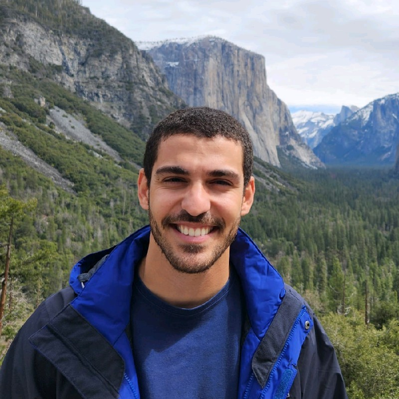
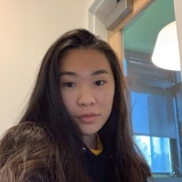
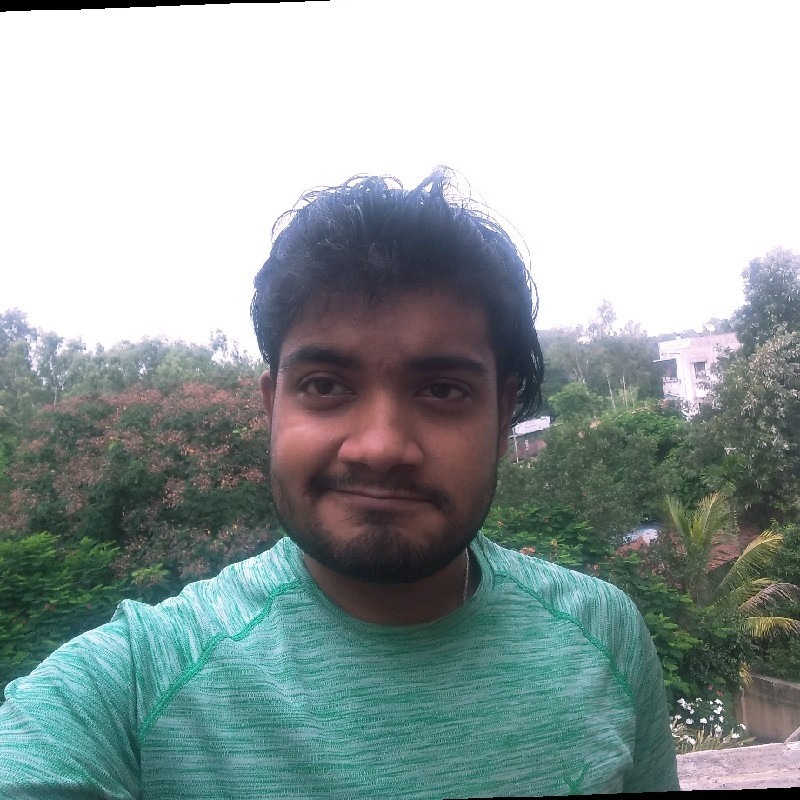
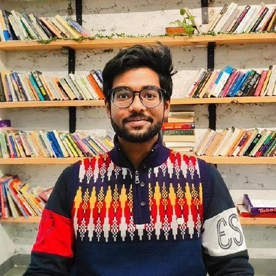
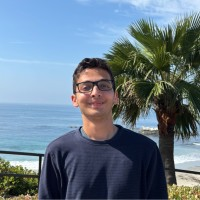

Students & Research Collaborators
Research is collaborative. I work with students and colleagues across cryptography, privacy-enhancing technologies, secure AI, computer architecture, and resilient computing.
Research Collaborators

Igor Nunes
Postdoctoral Researcher · UC Irvine
Co-advised with Prof.
Tony Givargis
Igor received his Ph.D. in Computer Science from UC Irvine. He also holds an M.Sc. in Systems Engineering and Computer Science from the Federal University of Rio de Janeiro and a degree in Computer Engineering from the Federal University of Espírito Santo.
His research focuses on efficient and privacy-preserving computation, with particular interest in Hyperdimensional Computing, Vector Symbolic Architectures, and sketching techniques. His work explores applications in machine learning, large-scale data analytics, graph algorithms, and database systems, as well as their use with homomorphic encryption for confidential computing.
Students

Caroline Wang
Ph.D. Student in Computer Science · UC Irvine
Caroline is a Computer Science Ph.D. student advised by me. She earned her B.S. and M.S. in Computer Science at UC Irvine. Her research interests include quantum and post-quantum cryptographic systems and algorithms, with current work spanning post-quantum security and resilient cryptographic computation.

Jayanta Chowdhury
Graduate Student · Barkhausen Institut, Germany
Co-advised with Prof.
Elif Bilge Kavun
Jayanta's research interests span digital hardware design, hardware security, and resilient computing. His background includes RTL and digital-system design using VHDL, Verilog, and SystemVerilog, together with software development in C and Python. Our current work explores resilient hardware and software techniques for cryptographic computation.

Varnit Singh
Master's Student in Computer Science · UC Irvine
Varnit is interested in embedded systems, computer architecture, and systems security. His broader experience spans systems engineering, mobile and edge computing, and hardware-software integration. His research interests focus on building efficient and trustworthy computing systems at the boundary between software and hardware.
Brittany Liu
Undergraduate Student in Computer Science · UC Irvine
Transferring to New York University in 2026
Brittany is interested in cryptography, post-quantum security, and resilient computing. Her current work investigates structure-aware software resilience for cryptographic computation, including fault detection and recovery for Number Theoretic Transforms used in post-quantum cryptography.

Pratham Hebbar
Undergraduate Student in Computer Science · UC Irvine
Pratham is interested in cryptography, cybersecurity, and intelligent systems. His broader experience spans software development, artificial intelligence, and security-oriented systems. His current research interests focus on cryptographic technologies and their integration into practical secure computing systems.
Broader Collaborations
My research also involves collaborations with academic and industry groups working across post-quantum security, privacy-enhancing technologies, secure AI, resilient computing, and computer architecture.
Current collaborations include work with researchers at NC State University, TU Dresden, Barkhausen Institut, UC San Diego, and other academic and industry partners.